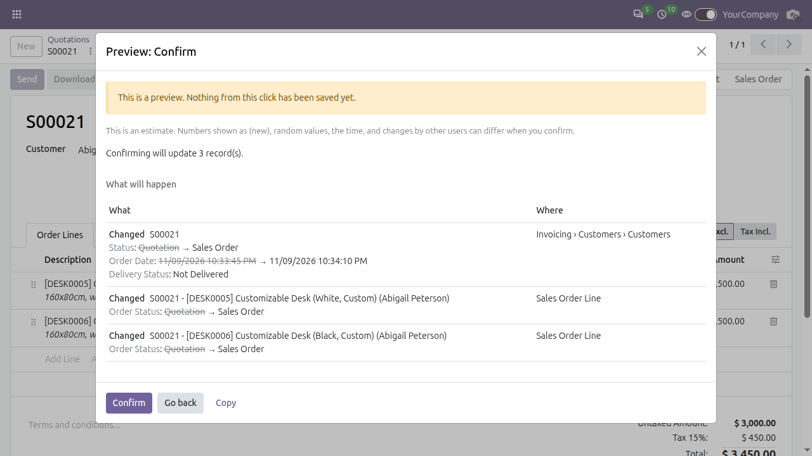

See what a button click will do before it does it.
Free and open source (LGPL-3). For every user of every app. Nothing to configure.
Confirming a vendor bill posts journal entries. Confirming a sales order changes its lines. Creating an invoice creates new records. These clicks are hard to undo, and Odoo does not show you the result first. Preview Mode does.
Turn on the switch in the top bar, click a button that changes data (Confirm, Validate, Post, Create Draft and so on), and a popup lists what the click would create, change or delete, and where each change lands in Odoo's menus. Then you confirm for real or go back. Nothing from the click is saved during the preview.
Other tools tell you what happened, or ask you to be sure. Preview Mode shows the result of the click, so you can preview a button click before you confirm it. The same idea exists in some ERPs for accounting postings; here it covers every app. That makes risky operations safer without a second step to undo them.
| Approach | Shows the result before the click is saved | Works in | Setup | Cost |
|---|---|---|---|---|
| Audit trail modules (for example OCA auditlog, AuditGuard) | No. Records the change after it happened. | Only the models you set up. | Rules per model (auditlog). | Auditlog is free. AuditGuard has a free and a Pro version. |
| Confirmation dialog modules for server actions | No. Shows fixed text such as "Are you sure?". | Server actions only. | Enable per server action. | Varies by module. |
| Undo or reversal modules (for example OCA account_reversal) | No. Fixes the mistake after it was saved. | Accounting documents. | Install the module. | Varies by module. |
| Accounting preview in other ERPs (SAP Simulate Posting, Dynamics 365 Preview Posting) | Yes, for ledger entries. | Accounting postings only. | Built into those products. | Part of those products. |
| Preview Mode | Yes. Runs the real click, shows the result, rolls it back. | Every button that changes data, in every app. | None. Install and turn the switch on. | Free, LGPL-3. |
Audit trails still have a job: they keep a record for compliance. Preview Mode does not replace them, it comes before them.
The switch sits in the top bar on every page, in the same place on Community and Enterprise. It lights up while preview is on, and your choice is remembered for your user.
| Off: buttons run as usual. | On: buttons that change data open a preview. |
Click Confirm on a quotation with the switch on. You see each change as New, Changed or Deleted, with old values struck through, and the place in Odoo where it lands.

Create an invoice from that order and the popup lists the new invoice and its lines, plus the changes to the order. The primary button of the popup carries the same label as the button you clicked, next to Go back.
base and web. Works on Community and when Enterprise is installed.preview_mode.enabled to False to hide the switch and stop previews for everyone.The preview runs the real click inside a database savepoint and always rolls it back. It sends no email, blocks
outgoing web requests made with Python requests, and does not use up a real sequence number.
It is a careful estimate, not a promise. If a click opens a separate database connection, the preview says
"Preview incomplete". Raw SQL writes are detected and flagged the same way. Calls to outside services other than
requests, files written to the filestore and work done in threads are not seen. Sequence numbers show as
(new), and changes by other users between the preview and your click can differ.
A heavy button runs twice, once as a preview and once for real.
Not covered: printing, imports, scheduled actions, server actions in the list Actions menu and kanban drag and drop. List Archive, Unarchive and Delete and status bar stage clicks are previewed.
This is the Odoo 19.0 version. The screenshots on this page were taken on Odoo 20.0; the popup looks the same on 19.0.
It depends only on base and web, so it is built for Community and Enterprise. It was checked
with Enterprise on 19.0 (the switch and the popup). Enterprise 20 has not been verified.
Licence: LGPL-3. Author: Samy Mostafa Shaawat.